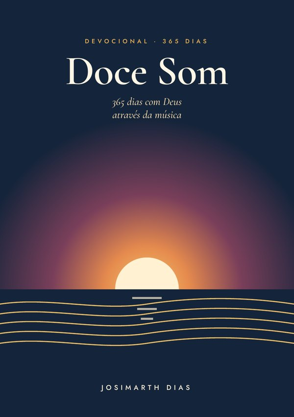
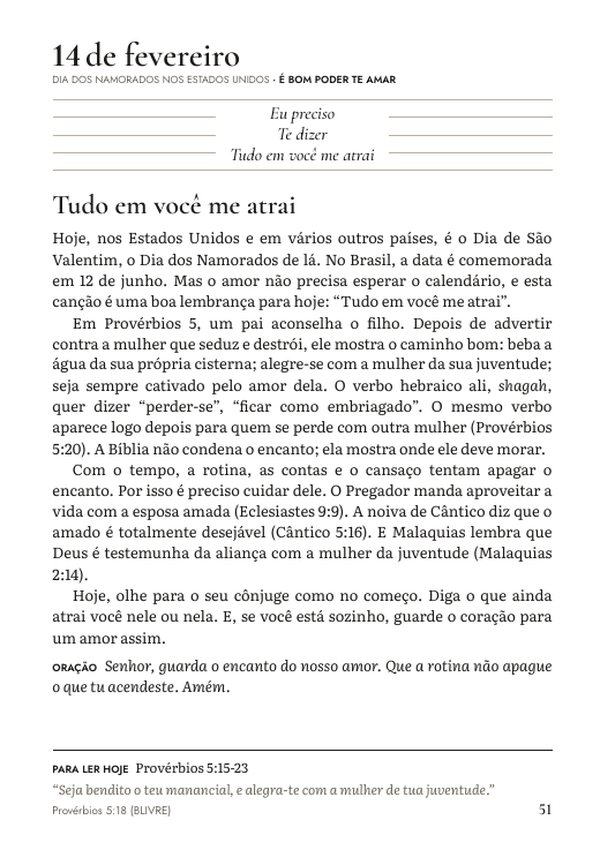
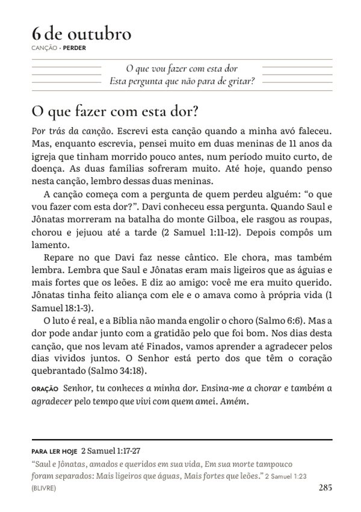
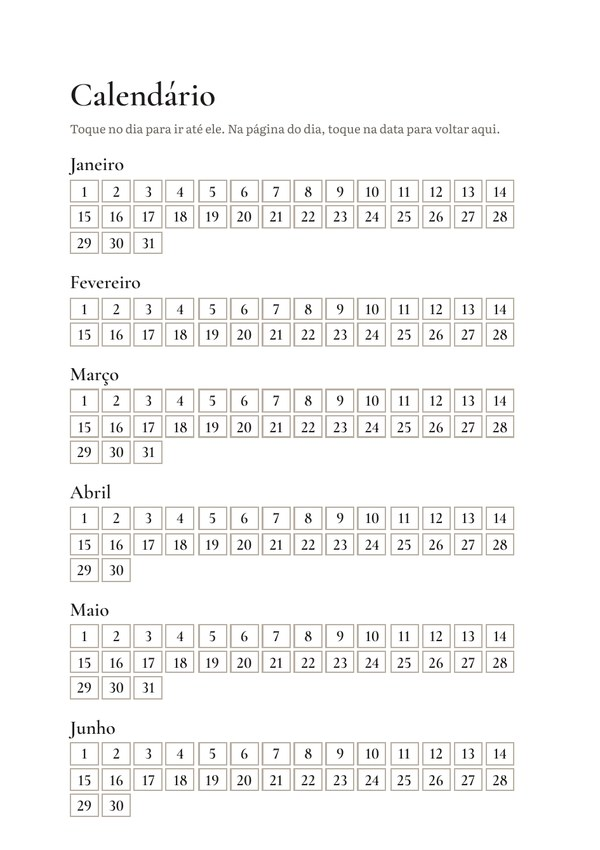
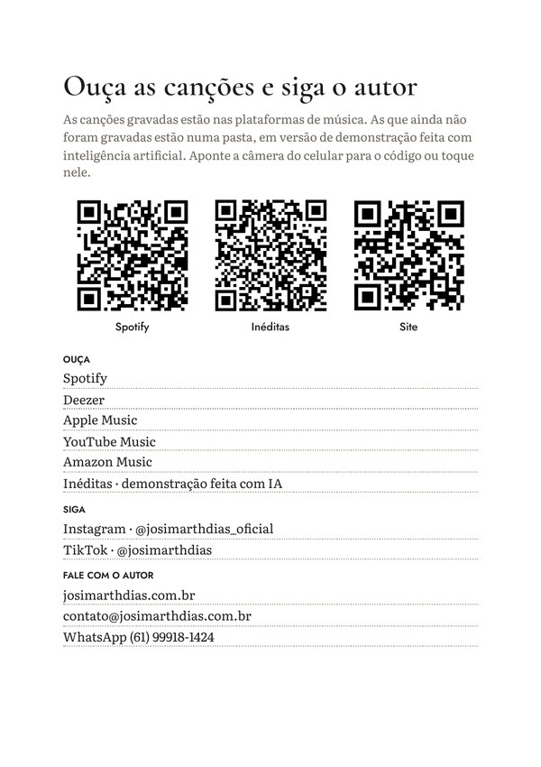

Calendário clicável
Toque na data e vá direto ao dia. Na página do dia, toque na data para voltar ao calendário.
Devocional · Livro digital

365 dias com Deus através da música
Um devocional para o ano inteiro, nascido das canções de Josimarth Dias. Em cada dia, um trecho da canção, uma reflexão que leva à Bíblia, uma oração curta e uma leitura para fazer com calma.
Tem canção que fica com a gente o dia inteiro. E se ela fosse o começo de uma conversa com Deus?
Cada página do Doce Som parte de uma das canções do projeto A Mensagem. A letra abre a porta, a reflexão conta a história bíblica por trás dela, com o contexto da passagem, e a oração fecha o encontro do dia.
São 365 dias, um para cada data do ano. As canções se alternam ao longo dos meses, e datas como a Páscoa, o Dia das Mães, o Dia dos Pais e o Natal têm uma palavra própria.
O encontro de cada dia
Cada dia cabe numa página e segue o mesmo caminho, para virar hábito sem pesar:
Em alguns dias, um parágrafo “Por trás da canção” conta, nas palavras do autor, como a música nasceu.
Por dentro
Feito para ler no celular, com calendário clicável e marcadores por mês e por dia.




Feito para o dia a dia
Toque na data e vá direto ao dia. Na página do dia, toque na data para voltar ao calendário.
Os 365 dias aparecem nos marcadores do leitor de PDF, agrupados por mês, com o título de cada dia.
Cada dia começa com a data por extenso, para quem prefere ouvir o devocional num aplicativo de leitura em voz alta.
As letras estão no fim do livro, com QR codes e links para ouvir no Spotify e nas outras plataformas.
Para quem é
Você pode começar em qualquer data: abra no dia de hoje e siga em frente.
Quem escreveu
Cantor, compositor e violonista de Brasília.
À frente do projeto A Mensagem, Josimarth escreveu todas as canções deste livro, letra e música. No Doce Som, ele transforma essas canções em um caminho de 365 dias com Deus.
Valor simbólico
R$9,99
no Pix ou no cartão · acesso imediato
Comprar agoraO valor é simbólico de propósito: o que entra com o livro ajuda a realizar os próximos projetos de música.
Garantia de 7 dias. Se não for para você, peça o reembolso dentro de 7 dias pela própria Kiwify e receba 100% do valor de volta.
Perguntas frequentes
Logo após a confirmação do pagamento, a Kiwify envia o acesso para o seu e-mail. Você baixa o livro em PDF na área do aluno.
Sim. O PDF foi feito para a tela do celular, com calendário clicável, sumário com links e marcadores por mês e por dia.
Pode. Os primeiros 14 dias de janeiro estão liberados de graça: baixar a amostra.
Não. Cada página tem a sua data, e você pode começar em qualquer dia do ano. Se perder alguns dias, continue de onde está.
A Bíblia Livre (BLIVRE). As reflexões contam as passagens com palavras simples, e cada dia indica um trecho para você ler na sua própria Bíblia, na tradução que preferir.
Sim. No fim do livro, uma página traz QR codes e links para o Spotify e as outras plataformas, e a abertura das letras tem o atalho “Ouça todas no Spotify”.
Você tem 7 dias de garantia. Peça o reembolso pela Kiwify e o valor volta integralmente.